Contenido del Curso
Sílabo de la Materia
El curso aborda métodos estadísticos descriptivos e inferenciales aplicados al análisis de datos educativos. Se desarrollarán competencias en interpretación de indicadores, diseño de instrumentos y uso de software especializado.

Estadística Descriptiva
Medidas de tendencia central, posición y dispersión para describir fenómenos educativos investigados.
Organización de Datos
Representación numérica y gráfica para análisis e interpretación de fenómenos educativos de forma clara.
Recolección y Tabulación
Herramientas informáticas para recolectar y tabular datos confiables de poblaciones o muestras.
Estadística Inferencial
Demostración de hipótesis mediante análisis paramétrico de variables, dimensiones e indicadores.
Colección del Semestre
Trabajos & Evidencias
Documentación de actividades, prácticas y evidencias desarrolladas durante el semestre en Estadística Aplicada a la Educación.
